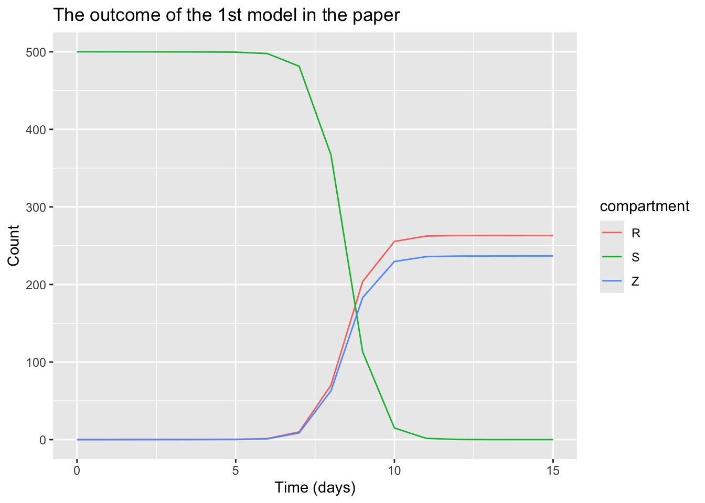

In one of my courses, we had a lecture on zombies where the professor showcased a SIR model for zombie-ism. It was an interesting model, though it does have it’s flaws. Considering I know how mathematical modeling works in ecology and have some experience working with these models (both on paper and using code), I thought it would be a fun project to work on.
First, let me introduce you to the [paper](https://math.uchicago.edu/~shmuel/Modeling/WHEN%20ZOMBIES%20ATTACK!-%20MATHEMATICAL%20MODELLING%20OF%20AN%20OUTBREAK%20OF%20ZOMBIE%20INFECTION.pdf) the model is from. In this paper, they discussed multiple models with different assumptions, I plan to discuss the 1st two models (the base model, and the latent infection model).
The base model:
Like in the typical SIR model, the authors divide the population into 3, susceptible (the living), the removed class (the dead), and zombies (the living dead). Susceptible can only become a zombie when they come into contact with a zombie, and the dead are sometimes resurrected as zombies. They assumed that the birth rate is constant, and that zombies move to the removed class once they are defeated by a susceptible (such as through decapitation). This is their first proposed model, as drawn in the diagram below.
Show the code
library(DiagrammeR)grViz(" digraph zombie_hybrid { # 'neato' allows absolu <- te positioning graph [layout = neato, rankdir = LR, splines = true] # Node styling (The 'DiagrammeR' look) node [shape = circle, style = filled, fontname = Georgea, fixedsize = true, width= 1] # Manual positioning: 'x,y!' # Higher x = further right, Higher y = further up src [label = '', style = invis, width = 0, pos = '-1,0.3!'] L [label = 'Susceptible', pos = '0,0!'] R [label = 'Recovered', pos = '4,0!'] Z [label = 'Zombies', pos = '2,0!'] # Edges with Greek symbols src -> L [label = 'π'] # Births L -> Z [label = 'βSZ'] # Bitten L -> R [label = 'δS', tailport = 's', headport = 's' ] # Normal deaths R -> Z [label = 'ζR', tailport = 'n', headport = 'n'] # Resurection Z -> R [label = 'αSZ', tailport = 'e', headport = 'w'] # Head got chopped}")
From this, it can be seen that the equation should be
\[ S' = \pi - \beta SZ - \delta S \\
Z' = \beta SZ + \zeta R - \alpha SZ \\
R' = \delta S - \zeta R \]
Solving the model, we can see that it must be that \(S = 0\) or \(Z = 0\). This means that the moment a zombie exists, humanity is doomed. This is show in the plot below.
Show the code
# I found this guide on using this package to make such models# https://rpubs.com/choisy/sir# It was also mentioned in a course# Here, I will re-create their 1st model (which they did not plot in the paper)library(deSolve)library(tidyverse)
── Attaching core tidyverse packages ──────────────────────── tidyverse 2.0.0 ──
✔ dplyr 1.1.4 ✔ readr 2.1.6
✔ forcats 1.0.1 ✔ stringr 1.6.0
✔ ggplot2 4.0.1 ✔ tibble 3.3.1
✔ lubridate 1.9.5 ✔ tidyr 1.3.2
✔ purrr 1.2.1
── Conflicts ────────────────────────────────────────── tidyverse_conflicts() ──
✖ dplyr::filter() masks stats::filter()
✖ dplyr::lag() masks stats::lag()
ℹ Use the conflicted package (<http://conflicted.r-lib.org/>) to force all conflicts to become errors
Show the code
zombie_equations <-function(time, variables, parameters) {with(as.list(c(variables, parameters)), { dS <- pi - beta * S * Z - delta * S dZ <- beta * S * Z + zeta * R - alpha * S * Z dR <- delta * S + alpha * S * Z - zeta * Rreturn(list(c(dS, dZ, dR))) }) }parameters <-c(pi =0,alpha =0.005, beta =0.0095, zeta =0.0001, delta =0.0001 )initial_values <-c(S =500, Z =0, R =0 )time_values <-seq(0, 15)zombie_value_1 <-ode(y = initial_values,time = time_values,func = zombie_equations,parms = parameters )zombie_1 <-as.data.frame(zombie_value_1) %>%pivot_longer(-time, names_to ="compartment", values_to ="count")zombie_1
# A tibble: 48 × 3
time compartment count
<dbl> <chr> <dbl>
1 0 S 500
2 0 Z 0
3 0 R 0
4 1 S 500.
5 1 Z 0.00000865
6 1 R 0.0500
7 2 S 500.
8 2 Z 0.000111
9 2 R 0.100
10 3 S 500.
# ℹ 38 more rows
Show the code
zombie_1 %>%ggplot(aes(time, count, colour = compartment)) +geom_line() +labs(title ="The outcome of the 1st model in the paper", x ="Time (days)", y ="Count")

However, I think the model has a 2 flaws. As one of my classmates pointed out during lecture, the zombies that had their heads chopped off can still be resurrected from the removed class, which shouldn’t be the case. Additionally, the model assumes constant births, which I don’t think is realistic. After all, new humans don’t spontaneously pop into existence, they have to be birthed by another human, so the number of births should be a function of the number of susceptible humans.
To rectify this, I have the group of culled zombies removed from existence each period and assumed that births is a linear function of the susceptible population. Graphically, it should look like this
Show the code
grViz(" digraph zombie_hybrid { # 'neato' allows absolute positioning graph [layout = neato, rankdir = LR, splines = true] # Node styling (The 'DiagrammeR' look) node [shape = circle, style = filled, fontname = Georgea, fixedsize = true, width= 1] # Manual positioning: 'x,y!' # Higher x = further right, Higher y = further up src [label = '', style = invis, width = 0, pos = '-1,0.2!'] L [label = 'Susceptible', pos = '0,0!'] R [label = 'Recovered', pos = '4,0!'] Z [label = 'Zombies', pos = '2,0!'] D [label = 'Dead\nZombies', style = invis, width = 0, pos = '4,1.2!'] # Removed zombies # Edges with Greek symbols src -> L [label = 'πS'] # Births L -> Z [label = 'βSZ'] # Bitten L -> R [label = 'δS', tailport = 's', headport = 's' ] # Normal deaths R -> Z [label = 'ζR'] # Resurection Z -> D [label = 'αSZ'] # Head got chopped}")
Leading to the equations
\[ S' = \pi S - \beta SZ - \delta S \\
Z' = \beta SZ + \zeta R - \alpha SZ \\
R' = \delta S - \zeta R \]
Looking at the equations, it can be immediately seen that \(S = 0\) is an equilibrium (which makes sense. If everyone is a zombie, there will be no more children being born and no more people to infect, and there is no one to cull the living dead). The other equilibrium would be \(Z = \frac{\pi}{\alpha}\) and \(Z = \frac{\pi - \delta}{\beta}\) , where the number of zombies equals the number the birth rate divided by the rate of which zombies are killed off.
Steps - Solve the equation - Do the Jacobian
\[ S' = \pi - \beta SZ - \delta S \\
Z' = \beta SZ + \zeta R - \alpha SZ \\
R' = \delta S - \zeta R \]
Show the code
my_zombie_equations <-function(time, variables, parameters) {with(as.list(c(variables, parameters)), { dS <- pi * S - beta * S * Z - delta * S dZ <- beta * S * Z + zeta * R - alpha * S * Z dR <- delta * S - zeta * Rreturn(list(c(dS, dZ, dR))) }) }parameters <-c(pi =0.0001, # In the paper, they never specified a value for pialpha =0.005, beta =0.0095, zeta =0.0001, delta =0.0001 )initial_values <-c(S =500, Z =0, R =0 )time_values <-seq(0, 20)zombie_value_01 <-ode(y = initial_values,time = time_values,func = my_zombie_equations,parms = parameters )zombie_01 <-as.data.frame(zombie_value_01) %>%pivot_longer(-time, names_to ="compartment", values_to ="count")zombie_01 %>%ggplot(aes(time, count, colour = compartment)) +geom_line() +labs(title ="The outcome of my proposed model using their parameters", x ="Time (days)", y ="Count")
Well, I’m currently living in Toronto, Ontario. Let’s change the parameters so they are more realistic and see how an zombie outbreak may play out here.
Show the code
# How long will Toronto last?# This isn't done yet, but I am tiredmy_zombie_equations <-function(time, variables, parameters) {with(as.list(c(variables, parameters)), { dS <- pi * S - beta * S * Z - delta * S dZ <- beta * S * Z + zeta * R - alpha * S * Z dR <- delta * S - zeta * Rreturn(list(c(dS, dZ, dR))) }) }parameters <-expand.grid(pi = (145169/(365*16258)), # I was unable to find the fertility rate of Toronto. # This is the fertility rate of Ontario, which is likely slightly lower than Toronto'salpha =c(0.001, # Humans are defenseless0.005, # Historical Munz value0.020 ), # Humans are effective huntersbeta =seq(from =1.1, to =2, length.out =3), # Here, I'm using the estimated R0 for rabies in dogs zeta =seq(from =0.0001, to =0.5, length.out =3), delta = (632/(365*100000)) # The crude number of deaths in Toronto in 2023 is 632 per 100,000. This is close to pre-covid deaths )initial_values <-c(S =7106379, # Toronto's population on July 1, 2024Z =0, R =0 )time_values <-seq(0, 20)zombie_value_TO <-function(p) {# 1. Run the solver using the specific parameters 'p' passed to the function out <-ode(y = initial_values,times = time_values,func = my_zombie_equations,parms = p # Crucial: Use 'p' here, not a static 'parameters' object )}zombie_TO <-as.data.frame(zombie_value_TO) %>%pivot_longer(-time, names_to ="compartment", values_to ="count")zombie_TO %>%ggplot(aes(time, count, colour = compartment)) +geom_line() +labs(title ="The outcome of my proposed model using their parameters", x ="Time (days)", y ="Count")# Toronto's population on July 1, 2024: https://www150.statcan.gc.ca/n1/en/daily-quotidien/250116/dq250116b-eng.pdf?st=RzwD6Cdh# beta value: https://pmc.ncbi.nlm.nih.gov/articles/PMC7613728/#:~:text=The%20basic%20reproductive%20number%20R,populations%20is%20an%20enduring%20enigma.# Ontario's fertility rate: https://www150.statcan.gc.ca/n1/pub/71-607-x/71-607-x2022003-eng.htm# Toronto's death rate: https://www.toronto.ca/wp-content/uploads/2025/11/9948-PublicHealthMortalityTrends2025.pdf